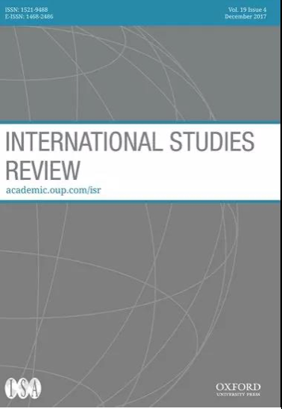
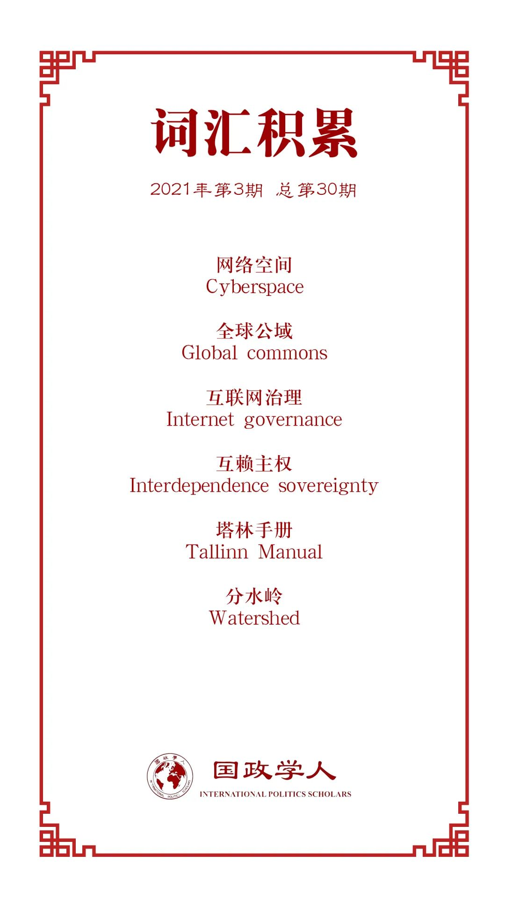

收录于合集

作品简介
【作者】 弥尔顿·L·穆勒（Milton L. Mueller），佐治亚理工学院公共政策系教授、网络安全政策硕士项目负责人，主要研究领域为网络安全、互联网治理、电子通讯和互联网政策。
【编译】 朱忻博（国政学人编译员，爱丁堡大学国际关系硕士）
【校对】 阮镇炜，朱家羲
【审核】 朱文菡
【排版】 林祉欣
【美编 】臧泽华
【来源】 Mueller, M. (2019). Against Sovereignty in Cyberspace. International Studies Review, 22 (4), 779-801. doi: 10.1093/isr/viz044.
【归档】 《国际关系前沿》2021年第3期，总第30期。
期刊简介

《国际研究评论》（International Studies Review）是由牛津大学出版社代表国际研究协会（International Studies Association）出版的同行评审学术期刊，以季刊形式发行。该刊旨在帮助：(a)学者进行将影响未来国际研究领域的对话和辩论；(b)研究生和本科生了解国际研究的主要问题，并发现有前途的研究机会；(c)教育者跟上新思想和新研究。该刊2019年影响因子2.232，在“国际关系”类别的95种期刊中排名第20位。
反对网络空间主权
Against Sovereignty in Cyberspace
Milton L. Mueller
内容提要
由于网络空间中领土和权威的分离，本文认为试图将主权应用于网络空间治理领域是不合适的。本文给出了一个以技术为基础的“网络空间”定义，并检视其作为行动、冲突和治理的独特领域的特征，同时澄清其与领土的关系。通过回顾自上世纪90年代初以来关于网络空间和主权的文献，本文发现过去十年中出现了明确支持将国家主权（引入网络领域）的思想和实践。而对于主权历史起源的国际关系研究显示技术经常改变国际秩序的基础，对领土主权是国际组织稳定、统一的原则提出了挑战，这同样可以推定适用于网络空间与主权的关系。本文还将关于网络主权的概念辩论与关于互联网治理的现实地缘政治斗争联系起来，展示了不同的主权概念如何服务于不同国家的利益，特别是美国、俄罗斯和中国。文章最后探讨了基于全球公域概念的网络空间替代治理模式的适用性，并驳斥了反对这种模式的论点，然后解释了如果我们以这种方式来设想网络空间会对治理产生什么影响。
文章导读
01
引言
随着国家在网络的权力日益增长，以及各国将网络空间（cyberspace）以军事主导来定义，导致很多人断言网络空间正在或应该恢复到威斯特伐利亚模式。有些学者声称网络空间需要一个基于国家主权的治理模式，同样，很多早已寻求网络空间国家主权权威的国家也开始将其作为互联网治理的代替模式加以阐述。而 本文认为，主权并不适合于网络空间治理领域，网络空间应被视为类似于太空和公海的“全球公域”，这样才能减少国家主权带来的网络空间冲突。
02
文献回顾
本节追踪了20世纪90年代初以来对网络空间和国家主权的讨论，显示了最近十年来出现的明确支持将国家主权（引入网络领域）的思想和做法。最早提出网络主权问题的论文，并不是试图将传统的国家主权应用于网络空间，而是声称网络空间本身就是主权空间。但反对者称这种想法为“网络无政府主义”和“网络例外主义”。而随着互联网和网络安全的重要性不断增长，各国逐渐重视起网络空间，军事竞争也开始涉足该领域。学者们对国家涉足网络间谍行动和国际冲突的关注也增多。两位持激进的网络空间（国家）主权立场的教授（Demchak and Dombrowsky）在2011年宣布了一个“新网络威斯特伐利亚时代”的到来。到目前为止，解决网络空间主权地位问题方面最有智慧的系统性尝试来自于国际法领域的《塔林手册》。在爱沙尼亚遭遇网络袭击事件之后，北约在其首都塔林成立了合作网络防御卓越中心（CCDCOE），该中心召集了一个国际法专家小组并花了三年时间研究武装冲突法在网络活动中的适用问题。其成果“塔林1.0”中确定了八项指标来评估网络攻击是否构成武装攻击：严重程度、即时性、直接性、侵入性、可测量性、推定合法性、军事性质和国家对网络攻击的责任程度。
通过对文献的回顾，作者指出：首先，虽然许多学者现在热衷于将国家主权引入网络空间，但严肃的学术文献仍在努力调和网络空间的全球连通性和与主权有关的域内管辖问题。第二，主权倡导者认为，引入国家主权可能带来以下好处：1.网络安全；2.国际规范；3.秩序；4.加强国家对通信的控制。
03
主权、领土、历史
本文指出（网络空间）主权论者欣赏威斯特伐利亚和平，但作者认为其假定是理想化叙述的一部分，与我们对过去的了解不符，更不用说为未来提供指导。国际关系史学者基本上驳斥了关于现代主权概念是由威斯特伐利亚和平确立的说法，没有有效的世界历史支持这一主张：自十七世纪以来，我们一直生活在一个稳定的、公认的领土主权国家的世界中。首先，帝国、殖民地和不断变化的边界是常态，而非例外。其次，技术变革与边界和权力结构的不断变化有关。网络空间给传统国家系统之外的行为体以权力，国家不再是（网络）威胁国家安全的唯一来源，也不再是网络安全最重要的提供者。最后，即使在主权概念在调节（西方）国家之间关系方面占主导地位的时期，主权主张也总是在一些具体领域被质疑，甚至有时被条约正式豁免。总之，国家边界的变化和不稳定性质，它们对技术的偶然性，以及在某些领域长期存在对领土主权主张的例外都表明不应推定传统主权原则适用于网络空间。
04
网络主权与地缘政治冲突
关于网络主权空间的辩论也反映了世界主要军事大国在互联网治理方面的权力斗争，尤其是美国、中国和俄罗斯。作者认为美国及其北约盟国和许多其他友好国家希望通过国际法框架处理网络空间中的主权问题。而美国竞争对手俄罗斯和中国的主权主张采用了非常不同的形式，尽管他们都主张并积极追求基于主权的互联网治理模式，但两国都不接受以《塔林手册》作为指南。在中俄看来，《塔林手册》使网络安全政策军事化，可能会使对网络攻击的实际军事反应合法化。第一本塔林手册（即“塔林1.0”）是北约在俄罗斯边境发生网络事件后立即制定的，许多西方人士将此事归咎于俄罗斯政府，而俄罗斯和中国也都没有被邀请参与“塔林1.0”的讨论。
在联合国关于网络安全规范的讨论也存在分歧。俄罗斯和中国在争论适用的国际法解释的同时，也在把国家主权作为他们处理国内和全球互联网治理的基础。例如，中国在2010年发布了一份分水岭式的白皮书，首先阐述了互联网主权的概念；俄罗斯领导人也认为主权是抵制“美国主导的霸权框架”的一种手段，该框架旨在用美国的世界观和价值观颠覆其他主权国家。
05
网络空间的本质
由于网络是由复杂的系统构成的，对于“网络空间”的通俗理解太过广泛。作者将其定义为 通过联合使用兼容的数据通信协议创建的虚拟交互空间。 “网络空间”是一个全球化的虚拟空间，互联网连接如今触及所有国家，超过全球一半的人口，并以每年3%-5%的速度继续增长。这种即时的和不受地理限制的互动能力，其范围和规模在历史上是前所未有的，而且随着信息技术和数据发展变得更加普遍，日益嵌入我们的社会、家庭和我们自身。作者将兼容的数据通信协议所创建的字段描述为空间，因为连接性使其各个部分相连且可导航，就像空间一样。由于其特殊性，这个（网络）空间并不能被还原到它的物理层面。作者还指出，网络空间的一个关键特征是其所基于的标准和协议是非专有且开源的。互联网协议是纯粹的公共产品：（没有任何行为体）对其拥有所有权，其使用既是非竞争的，也是非排他的。
全球普遍遵守兼容协议与协议的公共产品性质相结合，解释了为什么各国不能对网络空间行使主权。主权国家通常被定义为在一定疆域内拥有正当使用暴力的垄断地位的实体。在网络空间的背景下，这带来了两个难题。任何国家怎么可能在正当使用网络力量方面拥有垄断地位？而且，如果它确实设法获得了这样的垄断地位，那么这种至高无上的地位和正当性怎么可能受到领土的限制？除非是一个全球性垄断、全球性主权国家。
06
网络空间的治理和领土
网络空间确实存在边界，只不过其并不符合国家的领土管辖权。在网络安全方面，甚至在大多数网络秩序问题上，重要的是自治系统（Autonomous System）的边界和它们内部信息资产的安全，而不是（国家）管辖的边界。领土主权原则在处理对国家网络安全威胁方面没有提供额外的牵引作用，因为大多数网络威胁都是基于遍及全球的软件代码、应用程序和操作系统的漏洞。面对互联网庞大的数据，由国家主权来管理将是低效的，作者以19-20世纪邮政、电话和电报为例，认为它们是由国家管理的不发达、效率低下和自上而下控制的通讯。
07
作为全球公域的网络空间
相对于国家主权管理，作者提出网络空间的技术结构意味着其最好作为全球公域来治理。在网络空间的建构过程中，我们已经创造了一个不被国家主权“共有”或“共享”的全球公域。简单的事实是，财产和公地在网络空间共存，正如它们在几乎所有政治经济体系中共存一样。作者不认为开放的公共空间与利用它的私人物品和服务之间的区别会成为承认网络空间为公共空间的障碍。它与其他公共空间有很多相似之处，例如人造卫星是一个特定公司或国家拥有的实物，它们提供的服务(例如视频广播)可以是专属的私人物品，但使用卫星的国家毫无疑问地认识到太空是一个公共空间，并将其作为公域治理。船舶是实际拥有的私人货物，在主权管辖下注册，但海洋却被认为是公共的。不应将网络空间与占据它的客体以及在其中发挥作用的私人服务相混淆。
接下来作者展望了将网络空间作为全球公域并将国家主权排除在外会造成的不同结果。首先，它使国家不会优先于私人行为体。国家和非国家行为体都是网络空间的创造者和居民，而且很多非国家行为体会着眼于整个网络生态系统的安全与稳定，而不仅仅是自己国家的安全。这合法化并提高了非国家行为体在治理互联网方面的作用，加强了民间社会和私营部门的力量；同时，它并不干涉由国家主导的国内监管。第二，承认网络空间是一个全球公域，为解决国家间争端提供了不同的基础，一个更加牢固地扎根于网络空间本质的基础。这种方法不需要国家通过断言它们对网络世界中不同的“碎片”拥有绝对权威来获得行动的理由，而是要求各国承认它们在网络空间存在的共同利益，并寻求就相互接受的互动规则达成协议。作者认为也许这种方法最重要的特点是，相对于其他政策目标它赋予了全球连通性和兼容性的价值以更高的地位，肯定了网络空间中行动自由和无约束创新的重要性，这对国家和私营经济都有价值，并且行动自由使所有国家的网络军事力量能够平等地参与相互监视。
08
结论
本文通过提出网络空间的定义和网络治理问题的构建，认为网络空间具有类似全球公域的特征，对将国家主权引入网络空间的方法提出了直截了当的挑战。但作者指出，其主张并不意味着承认网络空间为全球公域就能马上解决网络安全、网络犯罪和跨境信息服务政策等棘手问题。然而，这将避免将主权强加于该领域的显著危险，并为解决跨国治理问题提供一个更好的框架。虽然互赖主权（Interdependence sovereignty）在现实世界能减少冲突，但将其引入信息和通信领域（网络空间），会使得领土主权要求成为冲突而不是秩序的根源。
译者评述
科技发展往往会给国家和社会带来重大改变，而出于种种原因，理论、政策和战略的制定一般会不可避免地滞后于这些变化，网络就是其中一个例子。虽说从因特网诞生至今已经过去了几十年，互联网也融入了大多数人生活的方方面面，但是国际上对“网络空间”和国家主权的关系尚无定论。一方面，当今世界各大国在网络空间的竞争与对抗呈现加剧态势，从情报监控等网络间谍活动，到网络空间规范制定、话语权争夺，再到对网络攻击、网络战应做出何种反映的争论等，无不表现出网络领域存在的巨大分歧。另一方面，网络并不是大国的专有物，由于其连通性和兼容性，世界各国及非国家行为体都能够自由地进入和使用网络空间，具有一定意义上的公共属性。
本文聚焦于将国家主权引入网络空间的争论，对学界日益增长的网络空间主权化势头进行了批评，并提出应将网络空间视为“全球公域”而非国家主权所有物。不可否认，这种方案确实有相应好处，可以减少网络空间中与主权相关的冲突。不过仍有些问题文中并没有解答。首先，作者说“全球公域”的方案可以为各国在网络上的纷争提供一个共同的基础，可是这个基础仍需要由各国相互协商达成一个都可接受的协议，其本质上还是由主权国家间谈判决定的，那怎能排除国家主权对网络空间的影响？这还引出了下一个问题，即谁在网络“全球公域”的谈判中具有话语主导权？本文用公海、太空等公共空间来做类比，但值得注意的是这些领域的国际规则制定也主要是由在该领域拥有优势实力的大国主导，而非话语权微弱的小国，更别说是个体参与者。其次，本文也提到中美俄目前在国际网络规则制定上呈现对峙态势，那么如何让大国从对峙转向支持共同构建网络“全球公域”是一个不得不考虑的问题，遗憾的是文中并没有提及。最后，作者的网络“全球公域”方案在涉及信息情报监控等问题时颇有些自由竞争意味，如自由市场会促使寡头乃至垄断企业产生，网络“全球公域”同样对拥有优势网络技术的行为体有利。文中说“行动自由使各国的网络军事力量能够平等地参与相互监视”(p.797)，但网络技术弱的小国、小企业和个人往往只是被监视的一方；相反，完全抛开国家主权界限后，网络强国和大型互联网公司能够更加便捷地在网络“公域”进行各种对它们有利的信息收集和情报活动。
总的来说，不论网络“全球公域”方案可行与否，本文指出的国际网络空间中的争论、冲突和缺乏统一规范的状态是现实的，“网络国家主权论”同样也存在着诸多问题。唯有在学界和各相关行为体间开展理性讨论，排除激进和狭隘观念的干扰，使国际规范制定尽快赶上（网络）科技发展的步伐，才能结束目前网络空间的混乱状态，减少各国间网络冲突的不确定性。
词汇整理

文章观点不代表本平台观点，本平台评译分享的文章均出于专业学习之用, 不以任何盈利为目的，内容主要呈现对原文的介绍，原文内容请通过各高校购买的数据库自行下载。
好好学习，天天“在看”

国政学人
支持学术公益与知识传播
微信扫一扫赞赏作者 __赞赏
已喜欢，对作者说句悄悄话
取消 __
发送给作者
发送
最多40字，当前共字
上一页 1/3 下一页
长按二维码向我转账
支持学术公益与知识传播
受苹果公司新规定影响，微信 iOS 版的赞赏功能被关闭，可通过二维码转账支持公众号。